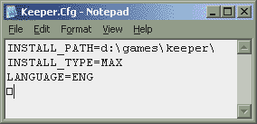
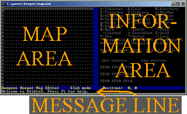

Tutorial
Adikted is a text mode tool, which makes it a little harder to use at first.
But after You'll get familiar with all functions, you will see that using
keyboard in text mode is in fact faster than editing map with mouse in
graphic-based editor.
This tutorial will guide you through creating a new level.
Please note that it was last renewed on version 0.53a, and if you're using
different version, there may be differences in commands and view.
You can always download the newest version from
Adikted project at SourceForge.
Getting started

Make sure you have Dungeon Keeper installed completely on your
hard disk.To do this, go into the "keeper" directory,
and create the directories "ldata" and "levels". Copy
x:\keeper\ldata\*.* and x:\keeper\levels\*.* into these directories
respectively (replacing x: with the drive letter of your CD-Rom).
Now edit Keeper.cfg so it points to your installation. For example,
INSTALL_PATH=C:\Program Files\Bullfrog\Keeper or
INSTALL_PATH=C:\games\keeper.- Go into the directory containing map.* (which is Adikted), and edit map.ini.
Change the "filebase" line so it points to your new "levels" directory.
This will enable you to load the original maps if you start Adikted with
a level number (eg "map 15" will load level 15 if you have set
things up correctly).

Start up Adikted by just typing "map" then return.- If all is well, a screen will come up with two blue lines, one down the
middle, and one along the bottom, dividing the screen into three
areas: the map area (the left side of the screen), the information
area (the right side of the screen), and the message line (at the
bottom). The message line should have a welcome message on it.
The left side of the screen should have dark grey # characters
on the top and left, and dots elsewhere.
- By looking at the key in the information area, you should
be able to see that this means there is rock to the top and left,
and earth elsewhere. In fact, there is rock all round the dungeon -
it's just you can only see the top left corner of the dungeon to
start with.
- The very top left corner of the screen should be highlighted.
This is your cursor. The next section will tell you how you can move
around with it.
Movement
- As you may have guessed (or tried already), using the arrow keys
moves the cursor around. However, if you want to go a long way, this
can take a long time. Use home/end/page up/page down to move faster.
On some operating systems, pressing ctrl with any movement key
will make it go further too. Note you can see exactly where you are
with the "Position" indicator on the dividing line at the bottom.
- When the cursor reaches the edge of the map area, moving it
further will scroll the map. Try moving around until you've seen the
whole border. The furthest you can go in each direction is 84, so
the bottom right hand corner of the map is 84,84.
Placing tiles
- The dungeon is pretty boring at the moment, right? Time to do
something about that. Find a nice spot somewhere easy to find (near
the top left corner, for instance) - but not right on the edge.
As a rule, don't get rid of the rock on the edge.
I'm not saying anything will go wrong, but it might -
I don't know how Dungeon Keeper reacts at the edges.
- Press t for treasure room, and sure enough a t
will appear on the map, under your cursor.
- Now if you move away from it, you'll see
it's grey on a black background. That means it's not owned by
anyone. Move back onto it, and press 0. Now when you move away,
you'll see it's white on a red background. This means that it
belongs to player 0 - the human player. There are 5 players -
players 0-3 are the Dungeon Keepers, player 4 is the Lord of the
Land (spit). Pressing the number of a player sets that square to be
theirs. Note that you can't make anyone own rock or earth - they are
always unclaimed. If you will claim them, they will return to unclaimed
state on saving or updating dungeon. They are a darker grey than other
tiles to remind you of this. This means you should place something before
you own it. Pressing 5 also "unclaims" something. If you move back over the
t, and press 5, then move away, it will have gone back to being
grey on black.
- The information area should give you an idea of what to press to
get specific tiles... basically you press the key it shows you!
There is one exception to this, which is graffiti. We'll come onto
that later. Also, where it says h:heart, that doesn't mean the
dungeon heart itself, it means the heart pedestal. You need to place
the actual heart itself separately (more on that later, too).
- Create a few small rooms, and put walls round them. Leave a path
of claimed land (spaces) to get from room to room though! It's often
easiest to create the rooms themselves first, then say who owns them
later.
- Tip: Create a portal by pressing E. This has been missed off the
key for the moment - I'll fix it in the next release.
Marking
- If you created any large rooms, you may have found it fairly
timeconsuming. There must be a quicker way... it's a pretty big map,
after all! Well, of course, having said that, there's bound
to be. It's called marking, and you do it like this:
- Find a spare bit of earth where you might want to create a big
room... a large lair maybe.
- Press ctrl+space. On the dividing line, it should tell you that
you're now marking, and on the message line it will say, "Mark mode
on".
- Move around a bit... a white rectangle should appear between the
cursor and where you first pressed ctrl+space.
- Mark out a nice big area... you want your creatures to have lots
of room, don't you?
- Press L, and the white rectangle should be replaced by a lots of
lair tiles.
- If you've put the new lair over earth, it will be unowned... you
need to set the ownership on the whole lot. Again, you can use mark
mode. Press ctrl+space again.
- Move around so the rectangle covers the whole lair, and press 0.
Surprise surprise, the lair should now be white on a red background.
- Tip: If you ever start marking then want to stop, press
ctrl+space again.
- Tip: You can save lots of time by laying out a lot of dungeon,
then marking the whole area to be owned by a player. You won't
accidentally own rocks or earth, so don't worry!
Painting
- Now, to make your creatures nice and safe, you may want a wall
round the lair. You could mark out a long thin rectangle for
each wall, but that would be a bit of a pain - you need to do each
one twice, remember - once for the wall, once for the ownership.
What you could really do with is being able to just move the cursor
around, leaving a trail of walls behind...
- Move to the edge of the lair, where you want to start laying a
wall.
- Press z. On the dividing line and message lines, there will now
be indications that you're painting. Try moving around...
- Nothing's happening! Don't worry, this isn't a bug... you
haven't told the editor what you want to paint with. Move back to
where you want to start laying the wall, and we'll try again.
- Press *, and start moving around again. Lo and behold, a trail
of walls will be left.
- "What about ownership?" I hear you cry. Good point. The walls
you're laying at the moment are unowned - not a good state of
affairs. So press 0 and try moving around again.
- Made the wall? Good stuff... now you want to put down the
paintbrush. Press z again, and you'll stop painting.
- "What if I want to change walls during painting?" No problem.
Just press a different key - you can paint with any of the normal
tiles, and any of the ownerships. Try painting a corridor from the
lair to the rest of your dungeon.
- Note that pressing home/end/page up/page down, or ctrl and the
arrow keys in paint mode won't lay a trail, as the cursor just jumps
from one place to another.
- Create a few more rooms, until you're fairly happy with your
dungeon layout.
Things
- Now, everyone knows there's more to Dungeon Keeper than rooms.
What about creatures, gold, spells, torches, etc? Well, it's time to
introduce you to "thing mode". Press tab.
- The background colours will have stayed the same, but just about
everything else will have changed. There will probably be some 1s
around, but nothing else. The key on the right will have vanished,
and a rectangle will have appeared under the ".tng entries" section
in the information area.
- Explanation time: where there are numbers, there are "things".
"Things" are objects of various different natures: spell books,
creatures, gold, dry ice effects, traps - a whole lot of stuff. You
can find out the details of these by moving over them.
- If there aren't any numbers on the screen, press tab again to go
back to slab mode. Draw out a big training room (and own it), then
press tab to go back into thing mode.
- Move over a square with a number on, and have a look at the
information area.
- In the ".tng entries" section there will be the word "thing"
somewhere. You want to highlight that. If it's already within the
white rectangle, you've got it already and there will be a whole
load of other information. Either way, you need to learn how to move
the highlighter around.
- Make sure num-lock is on. Now use the number pad 1-9. You will
see the rectangle will move to the place corresponding to the key
you press. Have a play around for a minute, then highlight the word
"thing".
- There should be some information in the top half of the
information panel. You can ignore the three lines of hex digits at
the top - they're for detailed hackery, and probably won't concern
you. Similarly, the position information may not interest you, but
the rest should come in handy. You'll be able to see what kind of
object you're looking at, and any other useful stuff about it.
Different objects can be altered in different ways:
- Doors: go back into slab mode (with tab), and place a door. Come
back into thing mode, and take a look. It should tell you what type
of door you placed, and that's it's unlocked. Press l to lock it -
pressing l again will unlock it.
- Creatures: Stay on the door you've just created, and press c. A
list of creatures will come up. Type in the number of one of them,
then press return. A short name for the creature will come up in the
highlighted spot, and the information will change. Also, there'll be
a couple of numbers in brackets just below the highlighter. That
shows which thing you're looking at on that subtile (each tile has
nine subtiles), and how many things there are there. Press / to
change back to the door, and you'll see that's thing no. 1 (assuming
there was nothing there beforehand).
- Press / again to cycle through to the creature again. You can
now change the creature's level by pressing s and x. Try it.
- Dungeon specials: change the position of the highlighter to any
empty spot (just for convenience) and press d. A "reveal map"
dungeon special will come up. Press s and x to change which dungeon
special the thing is.
- Spell books: Press b to create a spellbook. The first one will
be the Hand of Evil spell. Press s and x to change to a different
spell.
- Gold: Press g to create a pot of gold worth 500, or G to create
one worth only 250.
- Traps: Press t to create a trap. Again, press s and x to change
the trap type.
- Trap boxes: Press T to create a trap box (to be picked up by
your imps). Use s and x to change the type.
- Hero gate: Press H to create a hero gate.
- Dungeon heart: Go back into slab mode, and move to your dungeon
heart pedestal. Now go back into thing mode and press h to create a
dungeon heart. It will automatically be at the right height, so long
as you put it centrally on a pedestal - ie on a tile surrounded by
other dungeon heart pedestal tiles. This sounds more complicated
than it is - usually you'll just want to create a 3x3 pedestal, and
put the heart in the centre.
- Action points: Action points are used by the level script. Press
a to add an action point - the information panel will tell you which
number it is, for use when you write your level script.
- "Aargh! Now I've got loads of things all over the place!" Right.
You want to delete them, don't you? Well, move over a square with a
thing in, highlight it and press delete. Hey presto, it vanishes.
Get rid of all the things you've created so far, except the dungeon
heart.
- Pressing u will update the things in the level - this makes sure
that all the training posts, torturers, torches etc are in the right
place. Don't worry about it too much - Adikted does an automatic
update when you save the level, so you only need to concentrate on
the things you put down yourself.
- Press tab to get out of thing mode.
Graffiti
- Now onto a special feature of Adikted - graffiti. Fancy writing
a message on a wall? Dead easy.
- In slab mode, press d to draw some graffiti. Go on, press it now.
- You'll be asked to type in a message. Type in a pithy epigram...
or failing that, any old nonsense. Press return at the end.
- Eye-catching, isn't it? Yes, the purple @ signs mean graffiti.
When you're over graffiti, the information area says what it is.
You can always remove graffiti by pressing delete.
- Note that single graffiti is visible only from one side of the tile,
for example if it has WE (west-east) orientation, it will only
be visible from south. To see the text from both sides, you have to
create two graffiti items with oposite orientation (like WE and EW).
- You can change graffiti orientation with a.
It's quite a nice effect, but I'd recommend using it sparingly.
Ready to go!
- You know how to use Adikted to edit levels now. Create a small
level (you really only need a dungeon heart, and maybe try another
room).
- Finished already? That was quick... press ctrl+s to save your
level. Adikted will ask you for a filename. I recommend saving it in
a temporary file first - I usually use newmap - rather than saving
straight over the original DK files to start with. If there's
anything wrong with the dungeon, such as the human player not having
a dungeon heart, Adikted will warn you with a beep and a message,
but still save the level.
- Press ctrl+q to quit (just q on older versions).
- If you want to edit the level again, type "map newmap"
(replacing "newmap" with whatever you called your level). Your level
should appear in all its glory. Edit it until you're happy. Save and
quit again.
- Now copy your level files over to the levels directory, with a
command like this:
copy newmap.* c:\games\keeper\levels\map00001.*
I recommend using level 1, as it's easy to get to.
- Fire up Dungeon Keeper, and you're ready to go... press Start
New Game (if you copied it over level 1) and see what happens. It
may well instantly say you've won the game - that's 'cos you haven't
changed the level script. I'll deal with that in a different
tutorial... it doesn't really matter as far as Adikted is concerned
though.
- You're now ready to go back and design a proper level to fox all
your friends. Remember, you can press F1 at (almost!) any time in Adikted and
get help for whichever mode you're in. Good luck, and I hope you
enjoy using Adikted!
- Tip: Use ctrl+l to load a level within Adikted, and ctrl+n to
start a new level.
Please send any comments to
skeet@pobox.com
Back to the Dungeon Keeper Extras page.